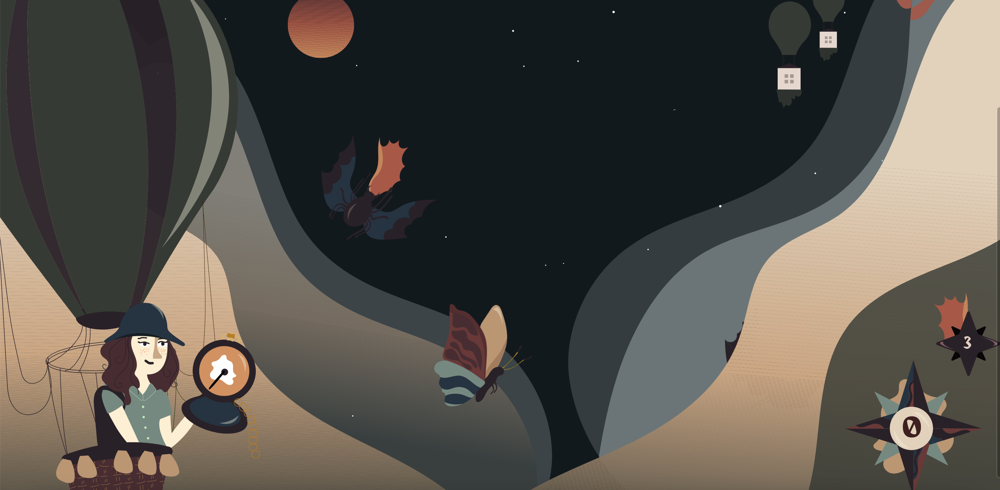
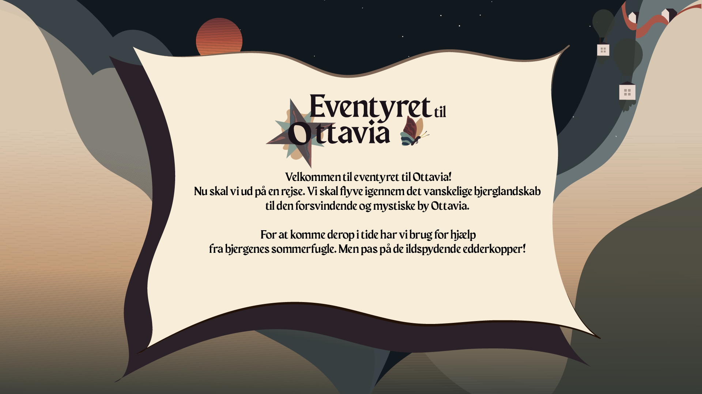
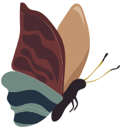
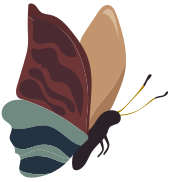
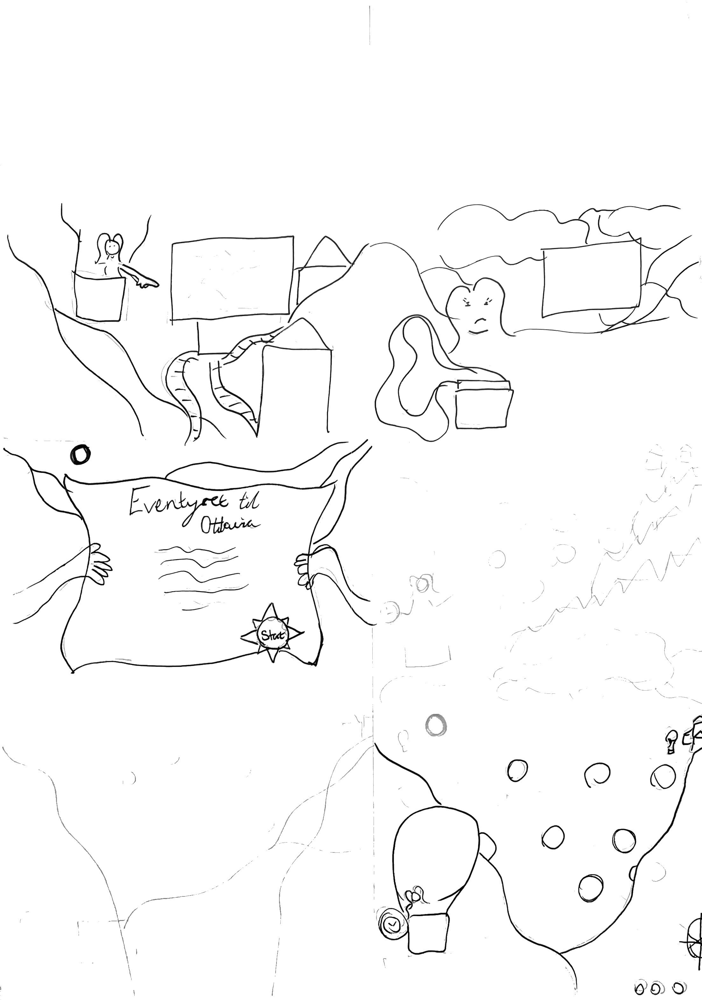

Animation


I animations projektet var formålet at lære sproget JavaScript igennem et spildesign. Vi havde et forløb om spil og karakter design sideløbende med forløbet om JavaScript. Jeg startede min design process med idegenerering. Her fandt jeg stikord som ”en rejse” ”bjerge” og ”luftballon”, og de blev til spiltitlen ”Rejsen til Ottavia”. Vi skulle lave en papirprototype som redskab til, hvordan spillet skulle sættes op. Jeg lavede skitser af mine karakterer, baggrunds- og UI elementer. Ved at have alle skitser klar, havde jeg et godt udgangspunkt, jeg derefter kunne overføre direkte til illustrator. I mit baggrundsdesign brugte jeg ingen vandrette linjer, da det skabte et perspektiv.
Vi lærte JavaScripts elementer såsom eventlistener, random position, this, const og firstchild. Derudover at tilføje og fjerne klasser. Vi lærte hvordan CSS og JavaScript hænger sammen. Vi fik stillet opgaver, hvor vi skulle fejlfinde, sådan at vi lærte, hvordan man finder sine egne fejl. Det er en vigtig teknik at kunne, da JavaScript er et komplekst sprog. For at kunne planlægge et JavaScript flow bruges aktivitetsdiagrammer og statemachinediagrammer. Jeg har også brugt JavaScript til mit portfolio for at skabe et mere avanceret og dynamisk site, dog brugte jeg ikke et statemachine diagram til start, hvilket havde gjort processen nemmere for mig.
 


Et krav var derudover at lave et website til spillet med en side om blandt andet designprocess,
assetliste og
statemachinediagram. På grund af tidspres fik jeg ikke lavet et wireframe eller layoutdiagram til sitet,
hvilket ville
have gavnet mig, og dette viste mig hvor vigtigt det er i en process. Det var et individuelt projekt,
hvor vi selv
skulle planlægge processen. En svær process hvor mange elementer skulle implementeres. Jeg lærte meget
af denne process,
og hvor vigtigt det er at disponere sin tid rigtigt i forhold til design, layout og kodning.